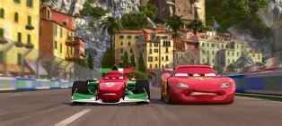
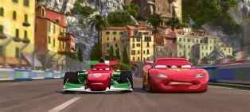

Rayo Mcqueen estuvo en su mejor momento durante la pelicula de Cars 2 ya que pudo ganar a Francesco Bernouli durante su carrera sabiendo que Francesco puede ir a más de 350 km/h.
 

Durante la pelicula de Cars 3 se había hecho la pregunta en porque Rayo Mcqueen no podia ganar al antagonista, Jackson Storm, si ya habia ganado a Francesco Bernouli que su velocidad maxima era de 354 km/h, Jackson Storm tenia una velocidad máxima era de 340 km/h, por lo tanto no tenia explicación.
Esto se puede resolver si tenemos encuenta un factor importante, primero entre Cars 2 y Cars 3 pasan como 7 años haciendo que Rayo fuera 7 años más viejo deteriorando con el tiempo su habilidades, ya no era el joven que tenia una gran velocidad, han pasado muchos años y para el en humano rondaba los 40 años, en Cars 2 tenia la edad perfecta rondando casi los 30 estaba en su mejor momento para correr su velocidad era de 355 km/h por eso pudo ganarle a Francesco, pero en Cars 3 por el tiempo y la edad Rayo tenia solo 322 km/h.